第218期
トレーディア新聞社
定価 無料
新聞THE TREDIA SHIMBUN
夏季
本日14面
1面総合
蒼森辺境伯領、全住民が餓死し消滅
食糧ゼロから一期間 住民全員が餓死 集落も複数消滅
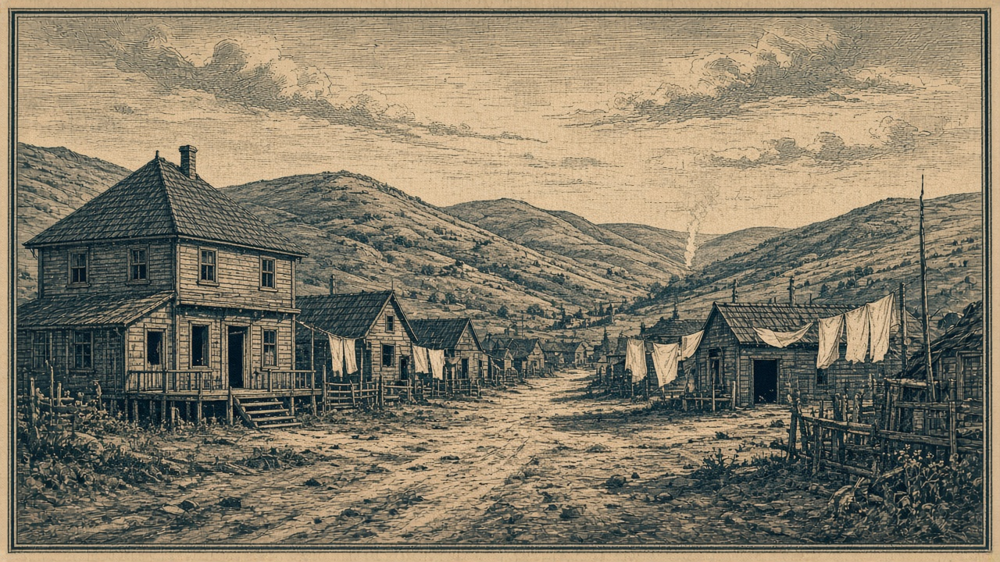
【総合部】第218期、蒼森辺境伯領では住民全員が餓死し、国が消滅した。前期にエクホルン（21,10）へ遷都した際の公報は人口千人、食糧ゼロ。今期、その千人を含む全住民の死亡が確認され、人口欄はゼロとなった。旧都ブロースコーグ（20,10）も新都エクホルンも、地図上は中立の陸地になった。陣営「王国軍」は蒼森の消滅に伴い、所属から同国を削除した。
エクホルンでは餓死者の遺体が路上に残り、運び出す人も弔う人もおらず、戸の開いた家には鍋や寝具だけが残る。住民の絶えた集落は複数に及んだ。前期の人口千人という数字は、最後の住民が飢えに倒れるまでの記録となった。
戦線では黒潮軍とカペレナ軍に投降した蒼森兵がいた。両軍は投降兵を「処分」し、投降しなかった兵士は全員行方不明となった。住民の餓死と並び、蒼森軍も兵力と指揮系統を失い、その所在を確かめられなくなった。
カペレナ王国は蒼森周辺で歩兵を投入し、Corps2・Corps7と交戦したあと、同国への開戦を宣言した。戦闘のあと辺境伯領は無人となり、カペレナは中立の山（22,14）を占領した。黒潮自治国と蒼森の戦争は停戦合意で終結し、黒潮の交戦国はなくなった。黒潮は軍港（16,8）と平地（17,9）など陸上四区画を保つ。
同じ期に停戦合意が三つ成立した。蒼森と黒潮に加え、胡椒帝国とスルガ、テキスタン共和国とオリョルッル王国が戦争を終えた。戦場ではカペレナが藍岬の軍港（85,21）を占領し、泰平天国がテキスタンの防衛施設（35,14）を占領して資金百億円を接収した。火災は二十一件、人口減は八万七百人。9面はチェス＝シロバキア共和国を特集した。
| 今期の主な数字 | |
|---|---|
| 蒼森 | 全住民餓死・国消滅 |
| カペレナ×藍岬 | 900／9,300 |
| 泰平×テキスタン | 1,900／8,400 |
| 接収資金（泰平） | 100億円 |
| 停戦合意 | 蒼森×黒潮／胡椒×スルガ／テキスタン×オリョルッル |
| 開戦 | カペレナ×蒼森 |
| 控え | 泰平×金野（219） |
- 2面蒼森無人化詳報
- 3面藍岬軍港陥落
- 4面テキスタン防衛施設
- 5面諸戦線・停戦
- 6面黒潮と橙原
- 7面火災八万七百人
- 8面乗船と運びの決まり
- 9面国特集 チェス
- 10面夏の空
- 11面珈琲積みの夜
- 12面入門 無人国
- 13面短信
- 14面編集後記
2面国際 蒼森
滅亡
蒼森、全住民が餓死し消滅
人口千人からゼロへ 路上に遺体、集落も複数消滅
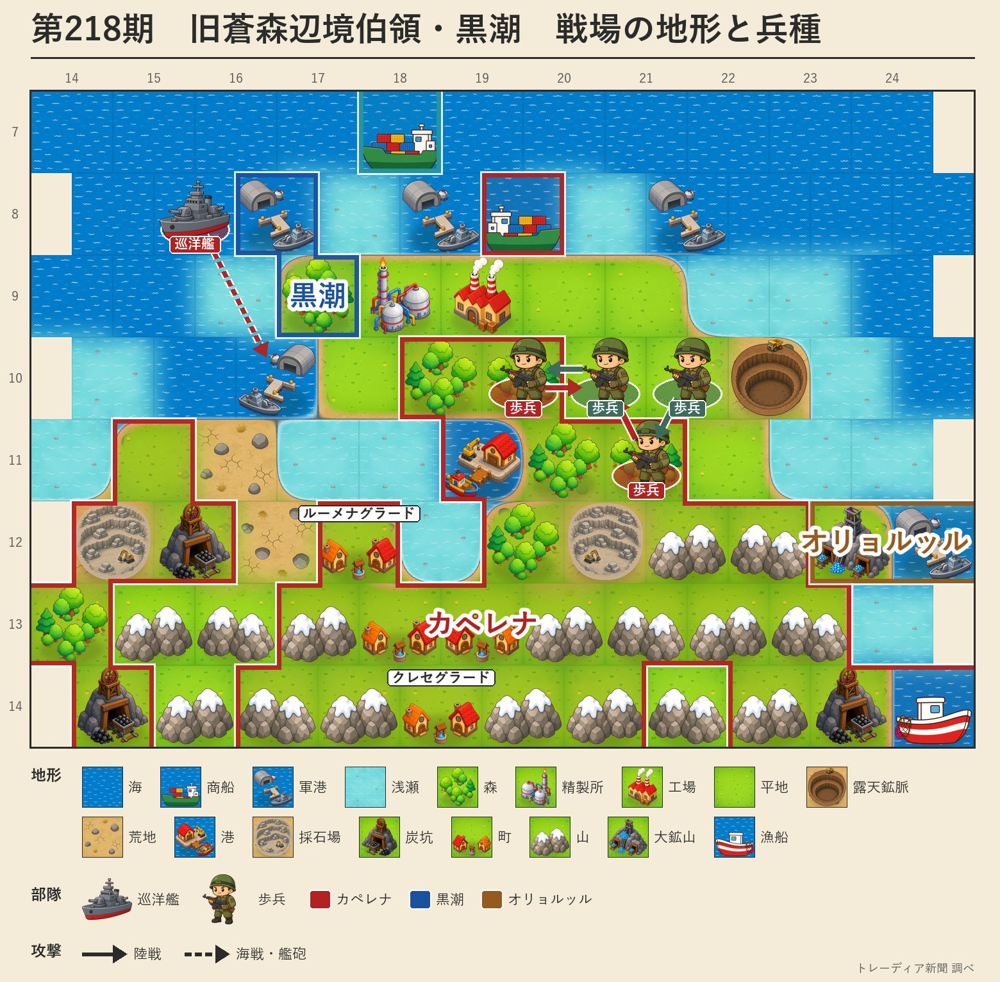
【政治部】蒼森辺境伯領は、カペレナ王国の第9軍歩兵と北方別動隊の攻撃を受けた。ブロースコーグ付近（20,10）のCorps2歩兵、エクホルン付近（21,10）のCorps7歩兵が応戦したが、戦闘の報告と並行して、前期以来の食糧ゼロが続いた。残った住民も一人残らず餓死し、蒼森の人口欄はゼロとなった。
蒼森軍の兵士にも過酷な結末が待っていた。黒潮軍とカペレナ軍に投降した兵士は両軍によって「処分」され、投降しなかった兵士は全員行方不明となった。住民の餓死とは別に、軍の部隊も組織として姿を消した。
無人国化ののち、カペレナ対蒼森の戦争勃発が宣言された。宣戦控えどおりの開戦だが、相手国はすでに人がいない。陣営「王国軍」は蒼森の消滅により所属から削除し、残る加盟国は金野伯爵領だけとなった。カペレナは中立地域の山（22,14）を占領し、旧辺境伯領の周辺で領地を広げた。
一方、蒼森と黒潮自治国は停戦合意に達し、両国の戦争は終結した。黒潮は交戦国のない状態となり、潮見玄吾議長が掲げた陸上の足場は、旧敵の消滅と停戦の両方を経て残った。旧都・新都とも中立地になった地図を前に、辺境伯領の名は公報の消滅欄へ移った。
隣国から様子を見に来た商人は、開いた門と空き家の並ぶ通りを見た。配給所前には鍋が置かれたまま、穀物を運ぶ荷車も係員も現れない。最後の住民が息絶えた後、遺体を町外れへ運ぶ者もなく、通りには生活の道具だけが散らばっていた。
旧都を離れた人々は、家族を連れて新都へ向かったものの、そこにも配給所を開く穀物はなかった。空腹で歩けなくなった者を運ぶ荷車も、看病する親族も次々に失われた。今期の人口ゼロは登録上の数字ではない。食糧の欠乏が最後の住民まで命を奪った結果だった。
町の通りでは遺体を片づける人手が途絶え、看取る家族も残らなかった。生きた住民が一人もいない集落は複数に及ぶ。停戦や開戦の公報が並ぶ中、蒼森では国名とともに日々の暮らしまで失われた。
| 蒼森辺境伯領 | |
|---|---|
| 状態 | 全住民餓死→国消滅 |
| 旧都 | ブロースコーグ（20,10）中立 |
| 新都 | エクホルン（21,10）中立 |
| 王国軍 | 所属削除 |
| 黒潮との戦争 | 停戦合意で終結 |

シャンドール 麦倉
空の倉より、一杯の麦を。
麦・雑穀。
金野・シャンドール
3面国際 藍岬
占領
カペレナ、藍岬の軍港（85,21）を占領
損害はカペレナ九百人、藍岬九千三百人 前期の町占領に続く
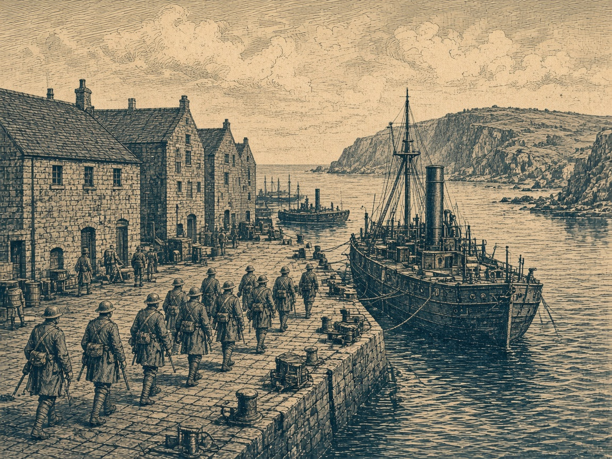
【国際部】カペレナ王国は藍岬共和国連邦の軍港（85,21）を占領した。当期の公報損害はカペレナ九百人、藍岬九千三百人。前期に町（84,22）を奪った戦線の続きで、岬の港湾拠点が王国側へ移った。
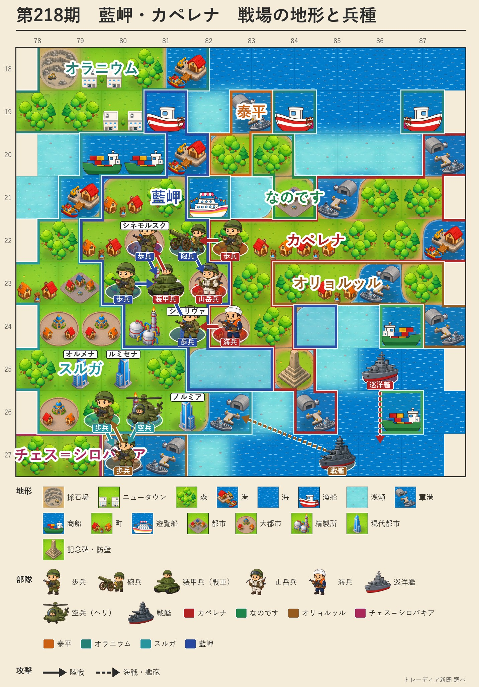
藍岬は首都シネモルスク（80,22）を保ち、徴兵と部隊設置を続けている。交戦国はオラニウム連邦、なのです主義人民共和国、カペレナの三正面。軍港を失ったあとも沿岸の守りを組み直す必要がある。
占領の損害は藍岬九千三百人に対しカペレナ九百人。港を奪われた藍岬は沿岸部隊への補給にも手間取る。首都へ艦船を回すか、残る港を固めるか。三正面の指揮官には厳しい配分が迫る。
軍港の陥落で、海岸へ兵を運び込む手段と艦船の停泊地がカペレナ側へ移った。藍岬は首都シネモルスクを維持しているが、奪われた町と港の間に防衛線を引き直す必要がある。三正面の戦況を見ながら、残る沿岸拠点に兵と物資を集められるかが次の焦点だ。
港を失った藍岬では、艦船の受け入れ場所と沿岸部隊の輸送路が同時に失われた。町の占領に続く軍港の陥落で、カペレナは海岸の拠点を広げた。藍岬は首都シネモルスクを守りながら、三正面へ兵力を割り振る難局に立つ。
| カペレナ×藍岬 | |
|---|---|
| 占領 | 軍港（85,21） |
| 損害 | 900／9,300 |
| 累計損害 | 2万900／15万2,000 |

シネモルスク 岬灯具
港の灯りを、もう一度。
ランプ・方位盤。
藍岬・シネモルスク
4面国際 テキスタン
占領
泰平、テキスタン防衛施設（35,14）を占領
資金百億円を接収 装甲が砲兵を全滅 テキスタンは停戦を打診
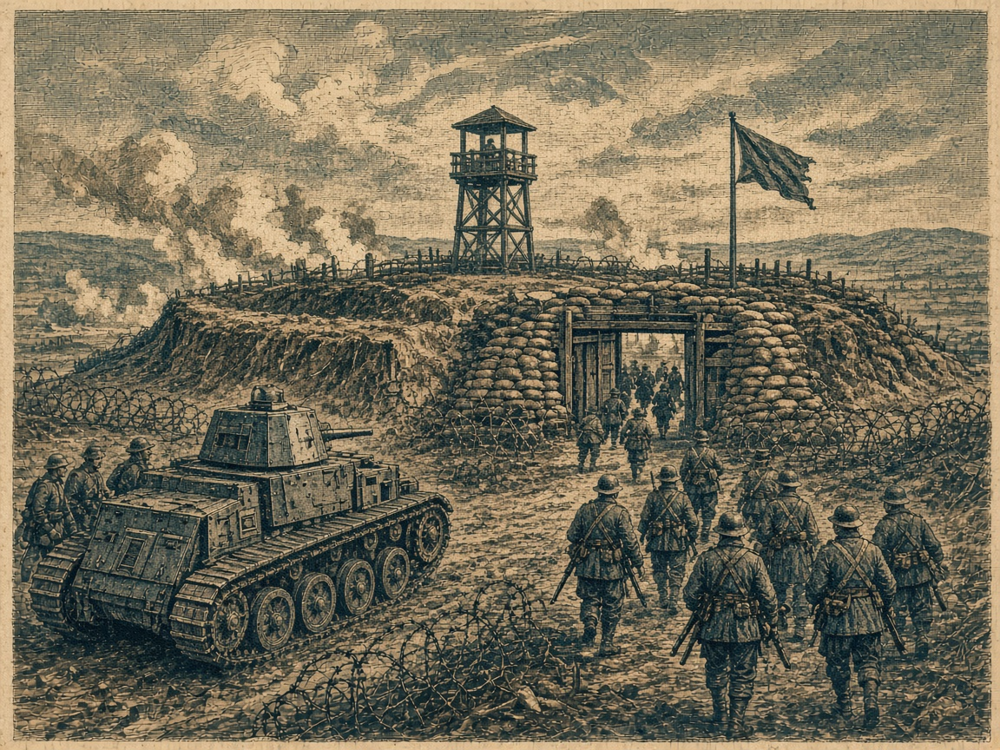
【国際部】泰平天国はテキスタン共和国の防衛施設（35,14）を占領し、資金百億円を接収した。泰平第25軍装甲Ａはテキスタン第32軍砲兵を攻撃し、部隊を全滅させた。当期の公報損害は泰平千九百人、テキスタン八千四百人。
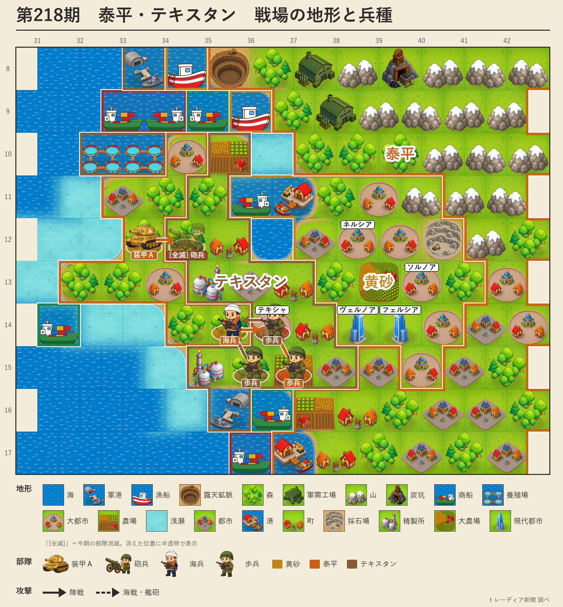
テキスタンは停戦を打診しているが、合意には至っていない。首都テキシャ（36,14）は残る一方、北側の都市圏と防衛拠点は前期からの占領で削られている。造船と徴兵を続け、帝国軍陣営で白波と並ぶ守りを模索している。
防衛施設の占領は泰平の前進拠点となり、テキスタン北側の防御を崩した。損害の差は兵員の補充だけでは埋まらず、全滅した砲兵の再編には装備も要る。首都テキシャを守る陣地をどこに置き直すか、停戦交渉と並行して決めねばならない。
テキスタンの停戦打診は、首都を守る時間を確保できるかを左右する。防衛施設は泰平側にあり、奪われた砲兵の穴を埋める部隊編成が要る。帝国軍陣営の支援を受けられるか、首都方面へ兵を集められるか。軍備の立て直しと停戦の成否が並行して問われている。
防衛施設の陥落に加え砲兵も失い、テキスタンは北側の守りを組み直す必要に迫られた。接収された百億円は再建資金に回せず、首都を守る兵力と艦船をどう確保するかが重い。停戦打診の返答を待つ間も、泰平軍は奪った拠点を保持する。
| 泰平×テキスタン | |
|---|---|
| 占領 | 防衛施設（35,14） |
| 接収 | 資金100億円 |
| 損害 | 1,900／8,400 |
| テキスタン | 停戦打診中 |

天都 鋼材問屋
装甲のあとに、一本の釘を。
鋼材・釘。
泰平・天都
5面国際 諸戦線
損害
金野・白波・スルガでも激戦
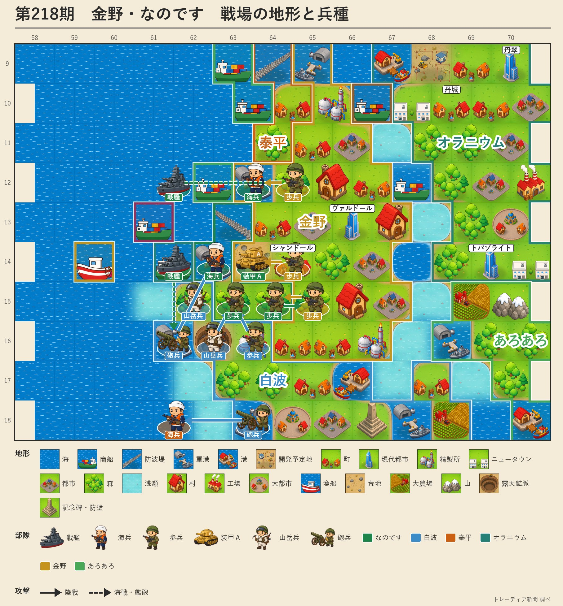
【国際部】なのです主義人民共和国と金野伯爵領の損害は、なのです六百人、金野六千七百人。なのですの戦艦は金野の町（65,11）に艦砲を命中させ、軍港（63,12）にも累計二発が当たった。白波王国との戦線ではなのです五千二百人、白波二千百人。
金野の町と軍港への砲撃は、住民の暮らしと海上輸送を一度に脅かす。各戦線の損害を合わせると、なのですは複数の相手を抱えて兵力を失っている。どの正面を優先するか、次期の部隊配置が戦況を左右する。
スルガとオリョルッル王国はスルガ三千五百人、王国八百人。翠湖自治州とオリョルッルは翠湖三千六百人、王国二百人。スルガ沿岸の戦況図は同面下段。
停戦・控え
停戦合意三つ 泰平×金野は219期
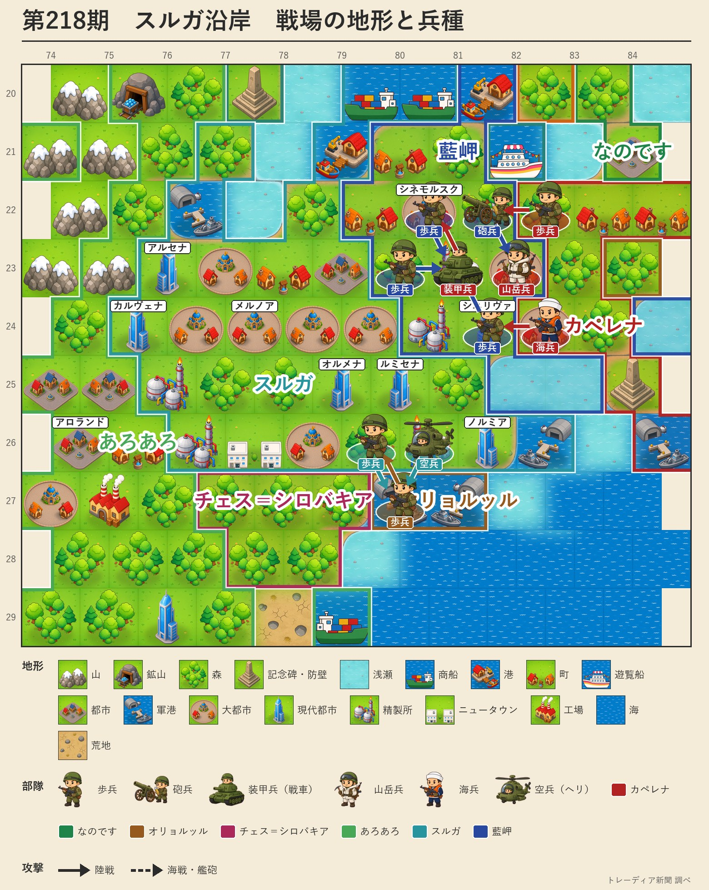
【外交部】停戦合意は、蒼森×黒潮、胡椒帝国×スルガ、テキスタン×オリョルッルの三つ。黄砂同盟とスルガ、オリョルッルと胡椒の戦争は継続する。オリョルッルの黄砂への宣戦は、相互不戦期間のため第222期まで中止された。
停戦が三組成立する一方、戦闘を続ける国々もある。宣戦控えが不戦期間で止められた例も含め、外交公報と実際の戦況は分けて読む必要がある。第219期の泰平・金野戦を前に、金野が打診した停戦が成立するかが注目される。
今期の損害は戦線ごとの差が大きい。金野は艦砲を受け、白波とスルガはそれぞれ別の相手との交戦で兵員を失った。各国は一つの前線へ集中できず、停戦の成立は兵力をどこへ振り向けるかにも影響する。
第219期には泰平天国対金野伯爵領の開戦が控える。金野側は停戦を打診する立場だが、合意はまだない。カペレナ×蒼森は今期開戦した直後に相手が消滅し、実戦の続きは旧領の中立地とカペレナ領の境で読むことになる。
| 期 | 宣戦控え |
|---|---|
| 219 | 泰平×金野 |

メルノア 桟橋茶
停戦の号外にも、熱い湯を。
麦茶・塩豆。
スルガ・メルノア
6面国際 黒潮・橙原
黒潮
交戦国なし 陸上四区画を維持
蒼森と停戦 人口3万3,900 首都欄は空のまま
【政治部】黒潮自治国は蒼森辺境伯領との停戦合意により、交戦国がなくなった。人口三万三千九百人、兵力六万二千二百人、領土四区画。首都欄は空のままで、海底都市を本拠とする体制が続く。軍港（16,8）と平地（17,9）など陸上の足場は維持している。
停戦後、黒潮軍は蒼森戦線に割いていた部隊を別任務へ動かせる。前期に世界進出を宣言した潮見玄吾議長は、次にどの港と航路を押さえるのか。青海・胡椒・シンジケートと組む同盟軍の一員として、陸上四区画をどう使うかが問われる。蒼森の消滅で境界線と駐留計画も変わった。
交戦国がなくなったことで、黒潮には部隊を再配置する余地が生まれた。だが陸上四区画を保つには、海底の本拠から兵員と物資を送り続けなければならない。潮見議長が掲げる世界進出を実行に移すには、占領後の統治と補給をどう整えるかも問われる。
橙原
橙原、首都を移す 人口千七百人
首都欄は空 なのですと戦争継続 領土二区画
【国際部】橙原自治共和国は首都を移した。公報は首都移動を記録し、国勢欄の首都は空欄となった。人口千七百人、兵力一万二百人、領土二区画。食糧は七十八万五千五百トンと厚い一方、なのです主義人民共和国との戦争は続く。
首都欄が空白のため、住民や行政機能がどこへ移ったかは外から見えにくい。食糧備蓄は厚いが、海底都市への砲撃で人口が減り、なのですとの戦争も続く。移転先と補給路の確保が、次の国勢報告で問われる。
首都の移転先を公報に示すことは、住民や同盟国に行政の所在を知らせる手掛かりとなる。橙原は食料を多く保有するだけに、備蓄を失わず戦線へ運ぶ輸送経路を確保できるかが重要だ。
フィルノア跡 潮見計器
交戦国のない週も、方位を。
方位盤・気圧計。
黒潮・外洋航路
7面社会 火災
災害
火災二十一件 人口減は八万七百人
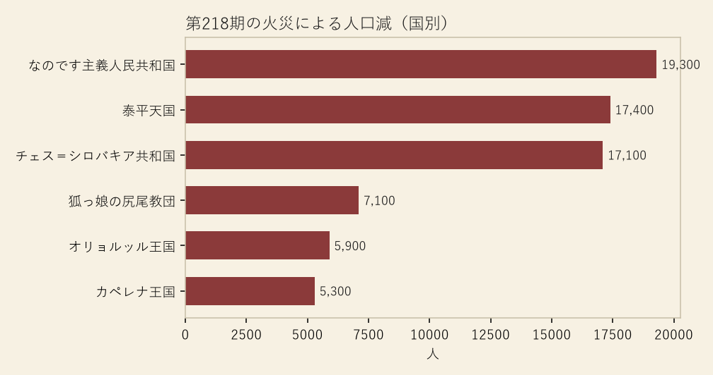
【社会部】第218期の火災は二十一件、火災前後の人口集計で八万七百人減となった。なのです主義人民共和国が一万九千三百人で最も大きく、泰平天国は一万七千四百人、チェス＝シロバキア共和国は一万七千百人。三国で全体の六割を超える。
狐っ娘の尻尾教団では七千百人、オリョルッル王国では五千九百人、カペレナ王国では五千三百人の人口減を記録した。あろあろ国でも四千九百人減。件数は前期より二件減ったが、人口の厚い町で火が出ると被害はなお大きい。
焼失した家屋と工場の再建には木材・石材と働き手が要る。戦時下の徴兵と輸送が続く国では、焼け跡の片付けが遅れ、商店の再開も後回しになりやすい。
人口減を国別にみると、なのです主義人民共和国が一万九千三百人で最多。泰平天国とチェス＝シロバキア共和国も一万七千人を超えた。上位三国だけで全体の約三分の二に達し、火災の集中した国では住宅と生産設備の復旧が急務だ。
二十一件という発生数は前期より二件少ないが、住民の損失は八万七百人に上る。焼失域の片付けや仮住まいの確保に人員を割けるかが次期の暮らしと国力を左右する。
人口減を国別にみると、なのです主義人民共和国が一万九千三百人で最多。泰平天国とチェス＝シロバキア共和国も一万七千人を超えた。上位三国だけで全体の約三分の二に達し、火災の集中した国では住宅と生産設備の復旧が急務だ。
二十一件という発生数は前期より二件少ないが、住民の損失は八万七百人に上る。焼失域の片付けや仮住まいの確保に人員を割けるかが、次期の暮らしと国力を左右する。
電都 粉挽き組合
焼け跡のあとに、新しい粉を。
麦粉・雑穀。
なのです・電都
8面経済・国土
相場
弾薬は8.60 藍岬戦の損害が最大
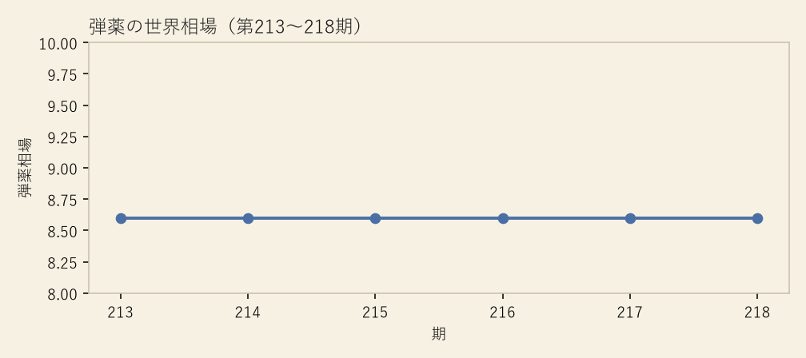
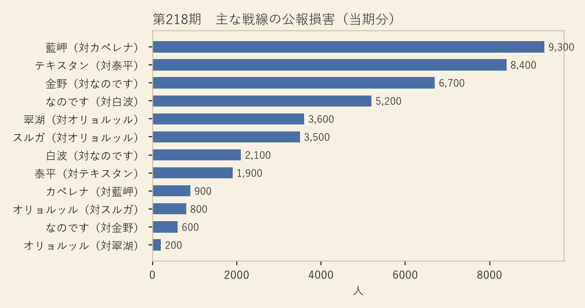
決まり
自国駆逐艦への乗船順と「船待ち」表示
【経済部】自国の駆逐艦に陸兵を乗せるとき、乗船先の駆逐艦がその場で待ち、命令が終わってから動くようになった。これまでは駆逐艦が先に動いて乗船できないことがあった。同じ艦に操艦の命令も出していれば、移動には操艦が優先される。他国の駆逐艦へ乗せる場合は従来どおり。
輸送の様子を示す言葉では、「入口待ち」を「船待ち」に改めた。港の入口に限らず、航路の先に船がいて進めないときに使う。造船では国の総経験と、次に造れる艦種まであといくつ必要かを確認しやすくなった。定期輸送は発送のたびに積み港を選び直し、援助・交換の船はより早く着ける受取港へ変更することがある。荷降ろし中に港を失った用船が出港できず保存できなくなる不具合も直した。
これらの変更は、輸送命令の後で船や港の状況が変わる局面に関わる。船待ち表示を見て経路を調整し、定期便の積み港と受取港を確認すれば、陸兵や物資を届ける計画を立てやすい。海上輸送を多用する国ほど、艦の順番と港の状態が作戦日程に直結する。
弾薬の世界相場は8.60。今期の戦線損害図では藍岬戦の損失が最も大きい。砲撃が続く戦場では弾薬の消費がかさみ、港までの輸送が滞れば部隊の行動も制限される。価格とともに、備蓄量、船腹、航路の安全を確かめたい。
諸国算盤店
乗船の順番も、珠で確かめる。
算盤・台帳。
各地の算盤店
9面国特集 チェス＝シロバキア共和国
国特集
チェス＝シロバキア 盤と珈琲の共和国
人口104万1,500 兵力27万2,300 領土278 交戦国は白波・金野
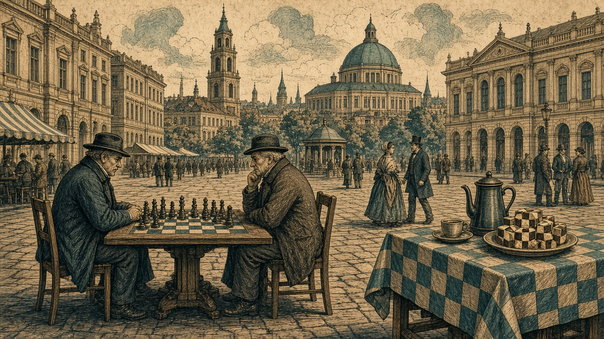
【特集部】チェス＝シロバキア共和国は人口百四万千五百人、兵力二十七万二千三百人、領土二百七十八区画。食糧は三百万トン、国庫は一万八千億円。交戦国は白波王国と金野伯爵領。政府の対外方針欄には「全員敵なので一人残らず消します」と強硬な標語が掲げられている。
首都の広場では昼下がりに盤上競技の机が出て、焼き菓子と珈琲を売る屋台に客が集まる。子供たちは駒の動きを覚え、対局後には盤を並べ直して手順を確かめる。大人も仕事帰りに加わり、勝敗をめぐる議論は夕刻まで続く。
共和国の政府方針は敵国を一掃すると掲げるが、首都の人々は盤を囲み、珈琲を飲み、工房で模型を作る。戦争を語る強硬な標語と、広場に根づく暮らしが同じ国の中にある。今期の火災で失われた住居や工房をどう再建するかも、市民の営みを左右する。
盤上競技を楽しむ人々のそばで、模型職人は小さな機関車や艦船を受注生産する。焼き菓子店や珈琲屋台は広場の催しに合わせて店を開き、職人や学生が同じ卓を囲む。火災で工房や住居を失った人々が仕事と場所を取り戻せるか、町の再建は暮らしの土台にも関わる。
| チェス＝シロバキア共和国 | |
|---|---|
| 人口 | 104万1,500人 |
| 兵力 | 27万2,300人 |
| 領土 | 278区画 |
| 食料 | 300万トン |
| 国庫 | 1万8,000億円 |
| 戦争 | 白波・金野 |
盤上教室、市松焼き菓子、濃い珈琲、模型職人の作業机、しろしろ。
首都 盤駒工房
一手を、木目で。
駒・盤。
チェス＝シロバキア
10面気象
実況
夏の空 曇りが多く雷は四つ
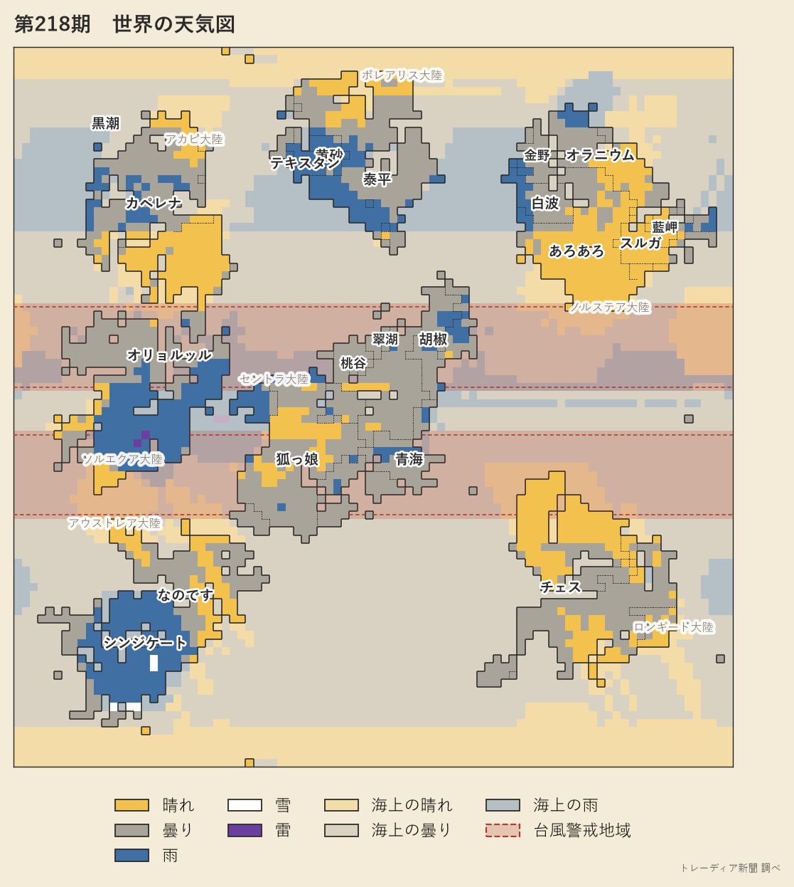
晴れ二千四十一、曇り四千八百七、雨千二百四十三、雪五、雷四。全八千百区画のうち曇りが約六割。晴れは前期より二十二区画増え、雨は三十七区画減った。雪は二から五へわずかに戻ったが、夏の気温分布が支配的だ。
曇りが続く内陸と雨の残る沿岸では、畑の乾き具合や道路の通行にも差が出る。天候の数字は全体の傾向と区画ごとの配置を併せて読む。
晴れ二千四十一区画、雨千二百四十三区画に対し、雷は四区画。第219期の予想図には台風警戒帯が描かれ、外洋を渡る商船には迂回の判断が要る。航路を延ばす場合、燃料と食料の積載量、寄港予定をあらかじめ調整する。
晴れと雨の区画数は前期から動いたが、全体の数字だけでは航路ごとの天候を読めない。船長は出発地から寄港地までの予報を確かめ、警戒帯を避けるか、日程に余裕を持たせる。海流も含めた航海計画が港の荷動きを支える。
第218期は曇りが全区画の約六割を占めた。雨は前期より三十七区画減り、晴れは二十二区画増えた一方、雷は四区画で局地的な荒天も残る。沿岸の短い航海と外洋の長距離航海では必要な備えが異なるため、予報図を寄港予定と照らして読む必要がある。
見通し
第219期予報 沿岸は警戒帯を確認
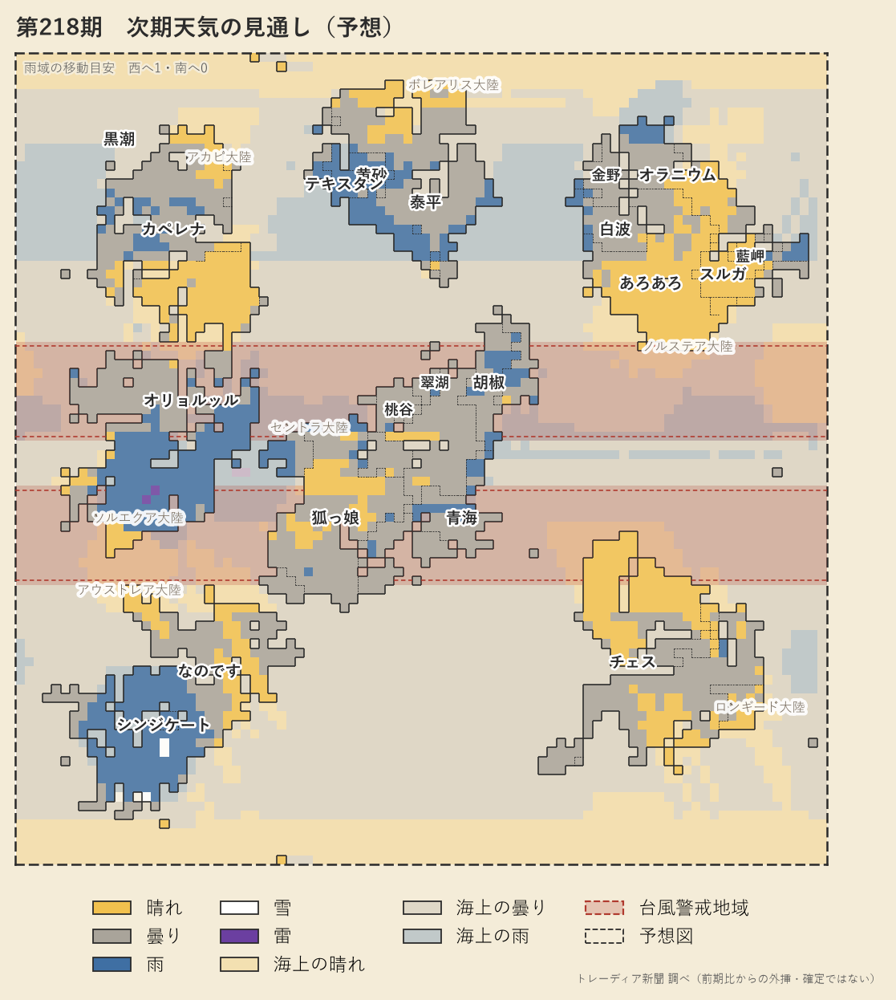
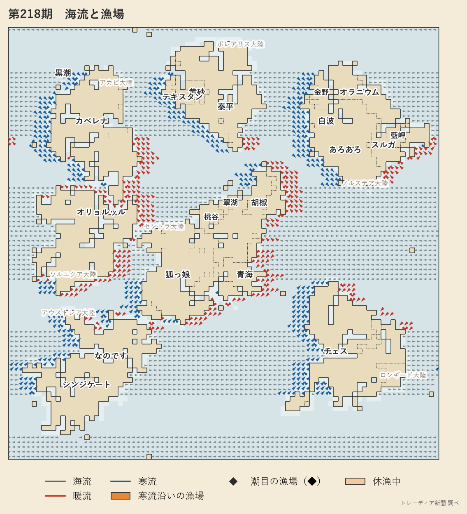
天都 和紙店
号外の紙を、整え直す。
和紙・朱墨。
泰平・天都
11面文化
行事
珈琲積みの夜 豆の袋がランプに照らされる
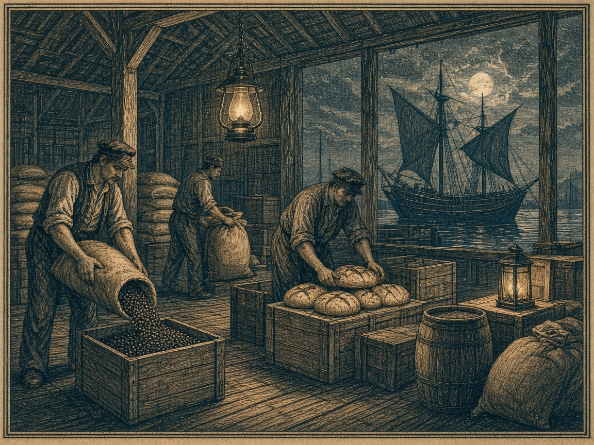
【文化部】チェス＝シロバキア共和国の港町で、夏の夜に珈琲豆の積みくらべが開かれた。出場者は麻袋を段に積み、高さだけでなく袋の結び方と香りの守り方も審査される。ランプの光の下で袋が傾くたび、見物人から短い歓声が上がった。
上位三人には焙煎の異なる豆が贈られ、優勝者は麻袋の頂に小さな木製の駒を置いた。店主は「いい豆は朝に挽いても香りが残る」と話す。競技後は豆の産地や焙煎を当てる客が店を回り、倉庫通りに珈琲の香りが広がった。
積みくらべは荷役の腕を見せる場であり、豆の品質を知る機会にもなる。袋の縫い目や結び目を見比べた買い手は、翌朝の仕入れ先を決める。競技後も倉庫通りに人が残り、屋台の珈琲を飲みながら翌日の荷を相談した。
積みくらべの麻袋は競技が終わると倉庫へ運び戻され、袋の傷みや結び方も荷役仲間の話題になった。店先では市松菓子と珈琲が売れ、勝者の駒を見ようと子供たちが集まる。荷の扱いを競う行事は、港の仕事を次の世代へ伝える場にもなっている。
盤上競技の昼と、港の積み夜が一日の両端にある。理屈と勝負事を愛する共和国らしい、手作業の祭りだ。
| 珈琲積みくらべ | |
|---|---|
| 場所 | 港の倉庫通り |
| 見どころ | ランプ・豆の袋 |
首都 盤辺珈琲
積みくらべのあとに、一杯。
珈琲・市松菓子。
チェス＝シロバキア
12面入門講座
入門第66回
無人国と消滅 人がいなくなったあとの地図
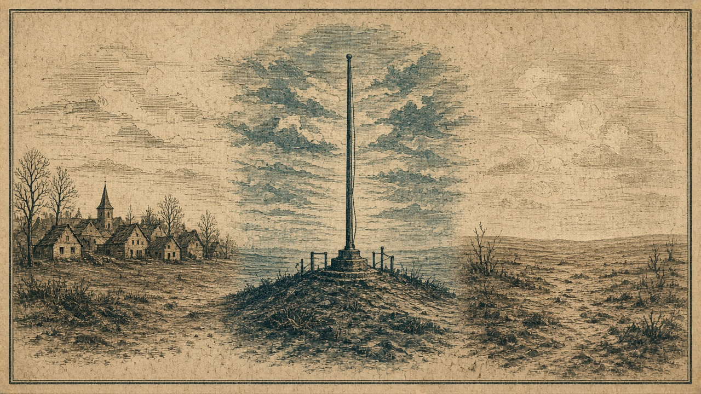
【編集部】無人国は、領民がいなくなった国を指す公報上の状態だ。人口がゼロになり、国勢欄から消える前段階として記録されることがある。消滅は、陣営の所属削除やfallen一覧への掲載など、国として扱われなくなる手続きを含む。
蒼森では前期の人口千人、食糧ゼロから一期間で全住民が餓死した。町には遺体が残り、複数の集落が無人となった。数字上の消滅を伝えるときは、そこに至った経過も報じる。
人口欄がゼロになっただけで記事を終えると、なぜ国が消滅したのか読者に伝わらない。蒼森では前期の食糧ゼロから住民全員の餓死に至り、遺体の搬出を担う人も残らなかった。行政の記録と現地の状況を並べてこそ、無人化の実態が分かる。
遷都は役所の所在地を移す手続きで、食料や人手を生み出すものではない。蒼森では食糧ゼロのまま最後の住民まで餓死し、新しい都も配給を再開できなかった。
カペレナの開戦宣言は人口が尽きた後に出され、旧都と新都は中立地となった。陣営名簿からの削除、停戦の成立、開戦宣言はそれぞれ異なる時点の出来事だ。ひとまとめにせず順を追って記すことが、国の消滅をめぐる誤読を防ぐ。
- 無人国化と消滅を分ける
- 都の座標が中立か占領かを見る
- 陣営所属の削除を確認する
諸国算盤店
消えた国も、珠で確かめる。
算盤・台帳。
各地の算盤店
13面短信
蒼森 前期人口千人・食糧ゼロから全住民が餓死し、国は消滅。遺体を運ぶ人手もなく、複数の集落が無人に。旧都・新都は中立地、王国軍から削除。黒潮・カペレナ両軍に投降した兵士は「処分」され、投降しなかった兵士は全員行方不明となった。
カペレナ×藍岬 前期の町占領に続いて軍港（85,21）も陥落。損害はカペレナ900人、藍岬9,300人。中立の山（22,14）もカペレナ領となり、藍岬は首都と三正面の防衛を迫られる。
泰平×テキスタン 泰平は防衛施設（35,14）を占領し資金100億円を接収。損害は泰平1,900人、テキスタン8,400人。装甲部隊が砲兵を全滅させ、テキスタンは停戦を打診している。
停戦合意 蒼森×黒潮、胡椒×スルガ、テキスタン×オリョルッル。
なのです×金野 損害はなのです600人、金野6,700人。艦砲が町（65,11）と軍港（63,12）に命中。
なのです×白波 損害はなのです5,200人、白波2,100人。複数正面で兵力を削られた。
スルガ×オリョルッル スルガ3,500人、王国800人。翠湖×オリョルッルは翠湖3,600人、王国200人。
黒潮 交戦国なし。領土4区画、人口3万3,900人。首都欄は空。
橙原 首都を移動。人口1,700人、領土2、首都欄は空。なのですと戦争継続。
控え 第219期に泰平×金野の開戦予定。金野は停戦を打診している。
セルヴァナ 桟橋茶舗
号外のあとに、一服。
麦茶・塩豆。
青海・セルヴァナ
14面編集後記
第218期、蒼森辺境伯領は全住民が餓死し、国として消滅した。前期の公報は人口千人、食糧ゼロ。遷都先のエクホルンでも食料は届かず、路上には餓死者の遺体が残された。運び出す者も弔う者もなく、複数の集落から人影が絶えた。国名の消滅は、住民の暮らしが尽きた後に記録された。
蒼森軍の結末も明らかになった。黒潮軍とカペレナ軍に投降した兵士は両軍に「処分」され、投降しなかった兵士は一人残らず行方知れずとなった。住民は餓死し、軍は所在を失う。国を構成した人々が、別々の形で地上から消えていった。
カペレナは蒼森への開戦を宣言したが、相手国の住民はすでに一人もいなかった。黒潮との停戦も成立し、旧都と新都は中立地、蒼森は王国軍の名簿から削除された。開戦と停戦の公報が同じ期に並ぶ一方、領民は飢餓で全員を失った。戦況表の一行では、この結末の重さを伝えきれない。
藍岬は軍港を失い、テキスタンは防衛施設と砲兵を失った。次号は第219期の泰平対金野の開戦を前に、金野の食料事情と停戦打診の行方、藍岬とテキスタンの防衛再建を追う。蒼森の終わりを地図から国名が消えた出来事だけで片づけず、飢餓が住民と集落を奪った経過まで伝えたい。
人口千人からゼロへ落ちる間、集落は無人となり、路上の遺体を片づける人手も尽きた。蒼森の消滅を受け、周辺国には中立地となった土地の扱いと新しい国境が残された。次号では誰がその土地を占めるかだけでなく、食料を絶たれた住民がどのように最後を迎えたかを記録する。